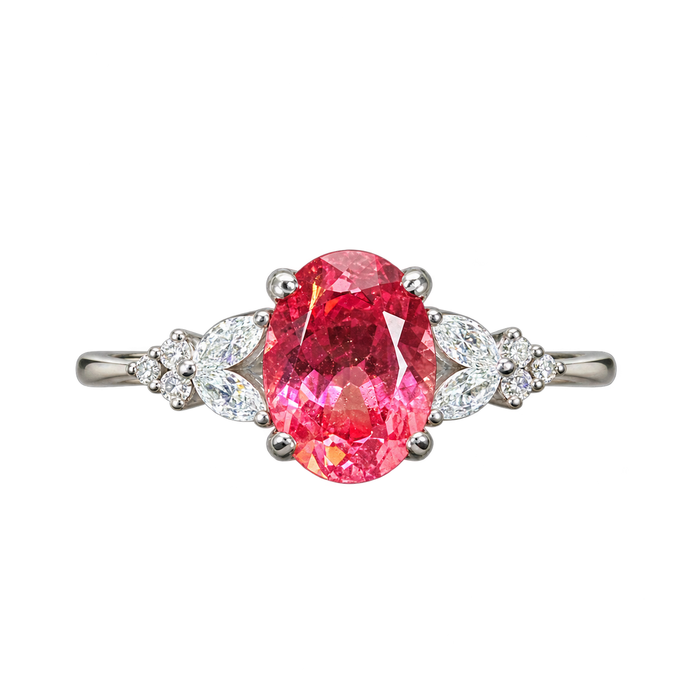
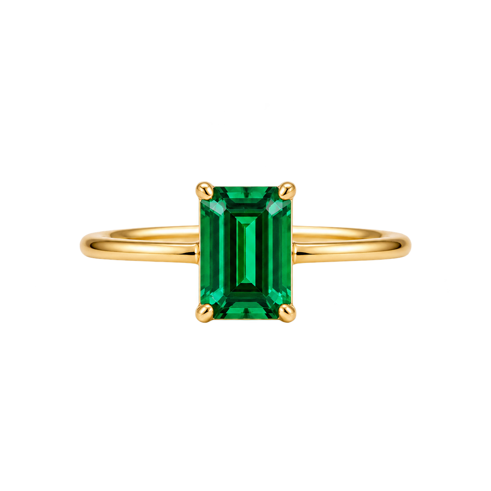
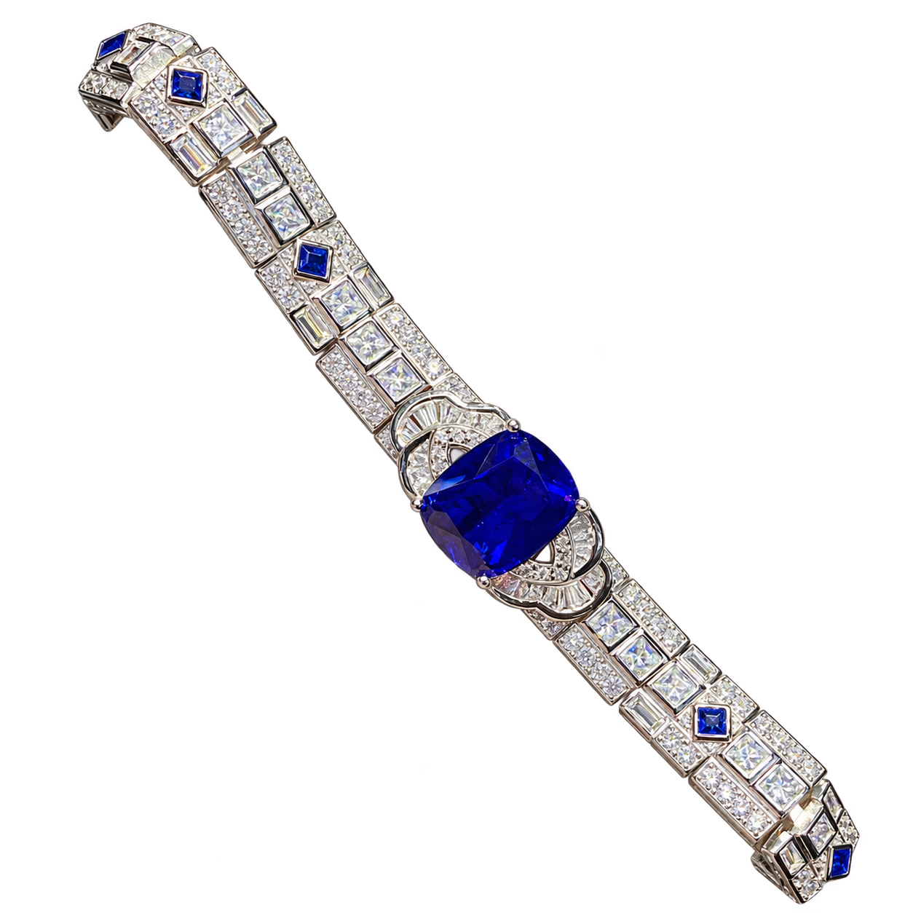
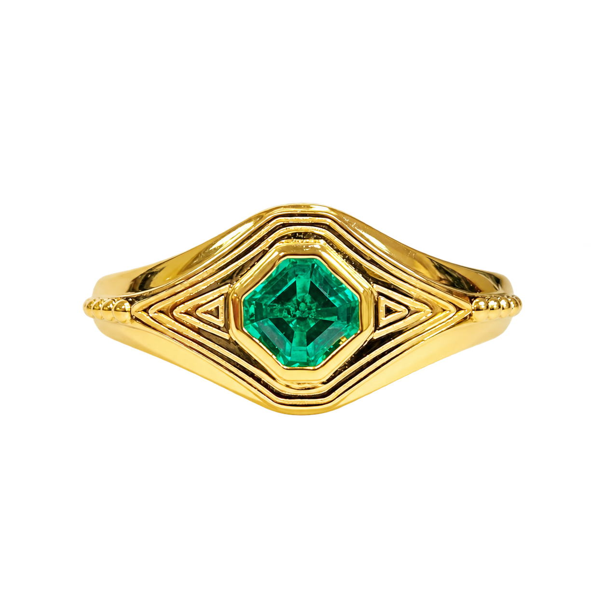
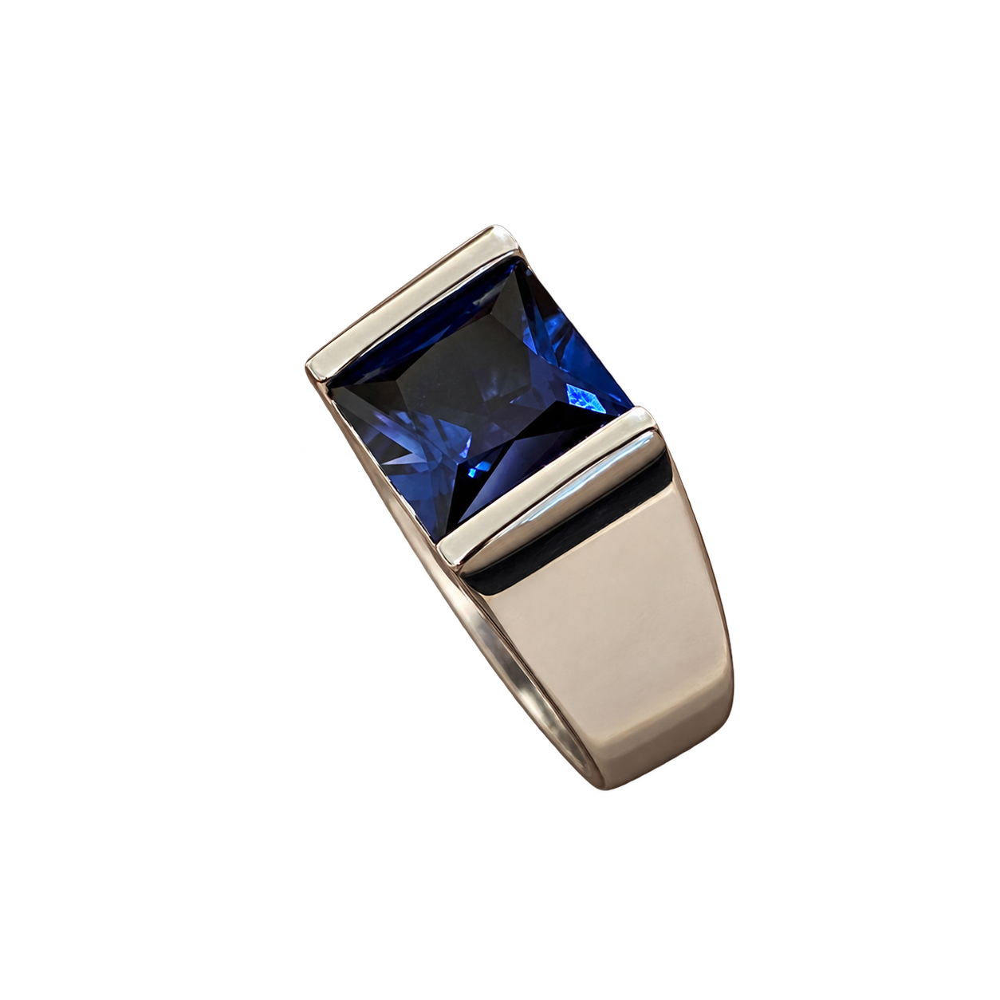
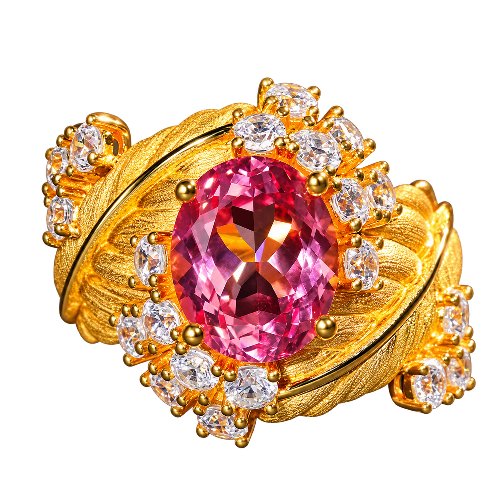
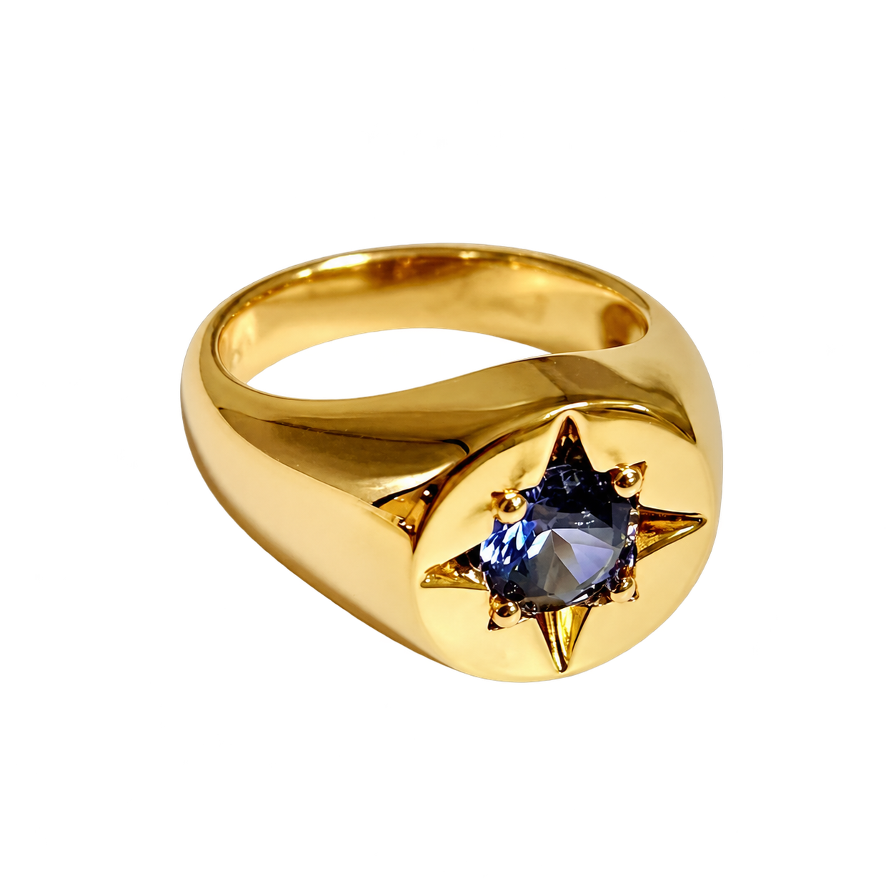
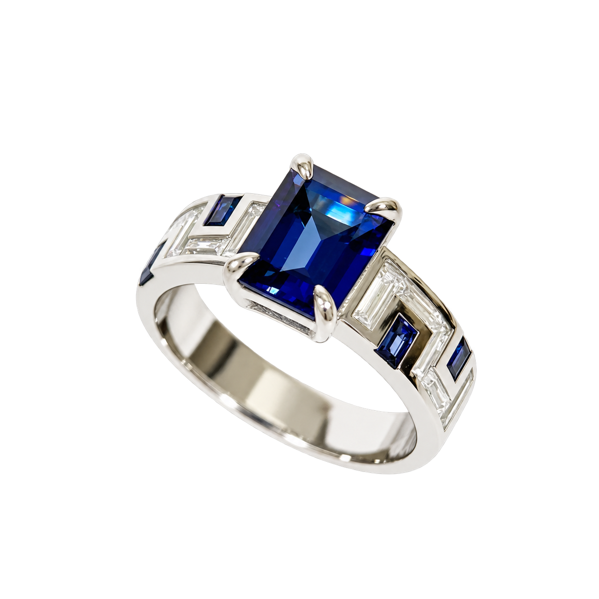
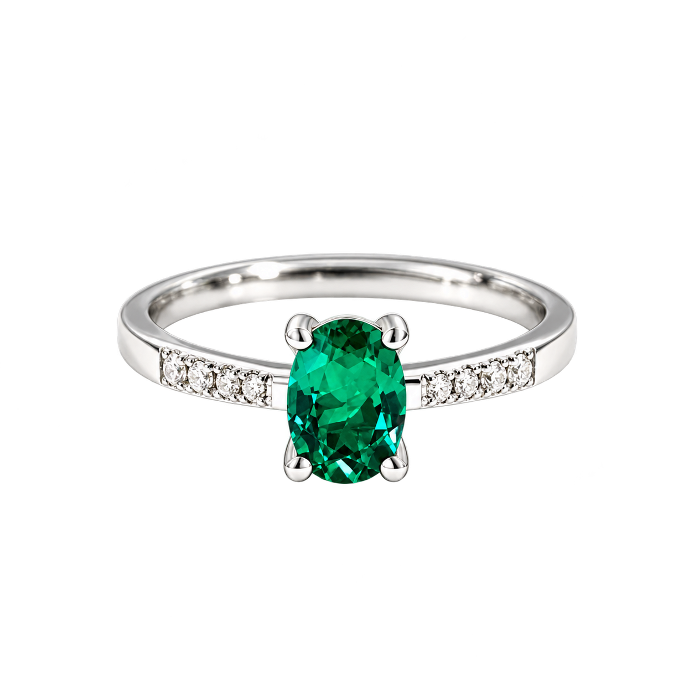
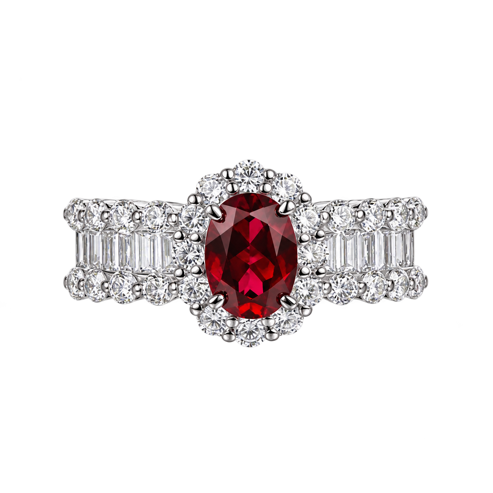

小紅書成品：樣本內前 10 款
從極星實驗室、Nereus、CUMEE、鹿玖、翱森及 VISING 取得 34 個規格網址，按同店同名商品合併為 32 組。其中 13 組為商家明示培育彩寶的成品（含 1 組混材），以下列已售值最高的 10 組。店舖首頁只提供部分商品，搜尋亦有個人化排序；覆蓋範圍未達全平台。
| 樣本序 | 具體商品／商家 | 已售原文 | CNY | 原文 |
|---|---|---|---|---|
| 1 | Nereus・帕帕拉恰銀鍍金戒指 Nereus Jewelry | 已售218 | ¥280 | 核對 |
| 2 | 翡冷翠・長方祖母綠戒指 极星实验室 | 已售208 | ¥399 | 核對 |
| 3 | CUMEE・培育合成藍寶石手鏈 CUMEE 库密 | 已售43 | ¥2278 | 核對 |
| 4 | 翱森・金章紳士祖母綠戒指 AURCEN | 翱森 | 已售24 | ¥546 | 核對 |
| 5 | 翱森・簡約中性藍寶石戒指 AURCEN | 翱森 | 已售13 | ¥890 | 核對 |
| 6 | VISING・帕帕拉恰刻絲戒指 VISING珠宝店旗舰店 | 已售12 | ¥1499 | 核對 |
| 7 | 翱森・八芒星藍寶石印章戒 AURCEN | 翱森 | 已售11 | ¥720 | 核對 |
| 8 | 翱森・幾何中性藍寶石戒指 AURCEN | 翱森 | 已售10 | ¥829 | 核對 |
| 9 | 微瀾・祖母綠活口戒指 极星实验室 | 已售8 | ¥399 | 核對 |
| 10 | 緋影・復古紅寶石戒指 极星实验室 | 已售5 | ¥699 | 核對 |
10 款實物與賣點
以下為商家來源圖經 AI 去背的展示版本，細節與色調請核對「原圖及證據」。每件均保留商家原圖、當時頁面、規格及平台 JSON；去背圖不作材質或鑲工判定依據。









同批其餘 3 款成品（含 1 款混材）
| 樣本序 | 具體商品／商家 | 已售原文 | CNY | 原文 |
|---|---|---|---|---|
| — | 星夢・皇家藍蛋形戒指 极星实验室 | 已售4 | ¥699 | 核對 |
| — | 人魚淚・皇家藍橢圓戒指 极星实验室 | 已售4 | ¥319 | 核對 |
| — | 夢蝶・藍寶石圍鑲鋯石戒指 极星实验室 | 已售2 | ¥319 | 核對 |
裸石：另表比較
以下價格屬裸石，代鑲服務另議。其已售值不與成品混作同一排名；實物原圖收於每件的核對頁。
| 樣本序 | 具體商品／商家 | 已售原文 | CNY | 原文 |
|---|---|---|---|---|
| — | Nereus・粉橙帕帕拉恰橢圓裸石 Nereus Jewelry | 已售377 | ¥170 | 核對 |
| — | Nereus・帕帕拉恰水滴裸石 Nereus Jewelry | 已售136 | ¥230 | 核對 |
| — | Nereus・絕地武士紅寶石裸石 Nereus Jewelry | 已售105 | ¥120 | 核對 |
高已售值，逐項覆核
鹿玖「皇家藍／矢車菊藍寶石」顯示已售 2,763，但規格為直播彩寶專拍 1 元／10 元。同一連結可收取不同內容；這個數字無法定位單一尺寸或切工的爆款。CUMEE「帕拉伊巴色」顯示已售 805，原文尚未明示寶石種類，先保留作相關款式參考。
| 商品 | 已售原文 | 處理原因 | 證據 |
|---|---|---|---|
| 培育皇家蓝色 矢车菊色蓝宝石裸石 | 已售2763 | 直播／訂製連結；直播專拍／通用訂製收款連結；規格未對應固定單件珠寶。 | 原圖與原文 |
| 培育鸽血红 绝地色 卢比莱色红宝石裸石 | 已售1031 | 直播／訂製連結；直播專拍／通用訂製收款連結；規格未對應固定單件珠寶。 | 原圖與原文 |
| CUMEE 简约贵气大小克拉椭圆合成蓝调帕拉伊巴色戒指耳钉.银镀金 | 已售805 | 材質待核；平台標題與規格不足以確認特定培育寶石品種。 | 原圖與原文 |
| CUMEE · 时尚个性款仿真祖母绿色糖塔戒指耳钉吊坠套装 | 已售768 | 材質待核；平台標題與規格不足以確認特定培育寶石品種。 | 原圖與原文 |
| Nereus【冰裂霓虹培育帕拉伊巴】钇铝榴石椭圆裸石/蓝绿色调 | 已售674 | YAG／排除；釔鋁榴石；選中 4 × 6 mm／0.7 ct。 | 原圖與原文 |
| CUMEE · 精致通勤套装 经典小克拉方形仿真祖母绿色首饰套装 | 已售650 | 材質待核；平台標題與規格不足以確認特定培育寶石品種。 | 原圖與原文 |
| 培育木佐色哥伦比亚祖母绿裸石 | 已售547 | 直播／訂製連結；直播專拍／通用訂製收款連結；規格未對應固定單件珠寶。 | 原圖與原文 |
| CUMEE · 夏日限定款 简约水滴戒指 仿真祖母绿色戒指 | 已售516 | 材質待核；平台標題與規格不足以確認特定培育寶石品種。 | 原圖與原文 |
| 培育超级拉贡色 霓虹帕拉伊巴色 卡扎尼绿榴石裸石 | 已售481 | 直播／訂製連結；直播專拍／通用訂製收款連結；規格未對應固定單件珠寶。 | 原圖與原文 |
| 培育拉贡色 薄荷色 金绿色彩色蓝宝石裸石 | 已售467 | 直播／訂製連結；直播專拍／通用訂製收款連結；規格未對應固定單件珠寶。 | 原圖與原文 |
| 经典小克拉三石款鸽血红色戒指 | 已售401 | 材質待核；平台標題與規格不足以確認特定培育寶石品種。 | 原圖與原文 |
| 极简风格糖塔款培育合成红宝石色宝石戒指耳钉套装 | 已售383 | 材質待核；平台標題與規格不足以確認特定培育寶石品種。 | 原圖與原文 |
| Nereus【培育冰裂霓虹帕拉伊巴】钇铝榴石水滴裸石可代镶定制 | 已售174 | YAG／排除；釔鋁榴石；選中 5 × 7 mm／1 ct。 | 原圖與原文 |
| 培育粉色 热粉色 越南粉尖晶色蓝宝石裸石 | 已售125 | 直播／訂製連結；直播專拍／通用訂製收款連結；規格未對應固定單件珠寶。 | 原圖與原文 |
| AUSTIN翱森定制链接（定制类产品无质量问题不退不换，可改圈口尺 | 已售28 | 直播／訂製連結；直播專拍／通用訂製收款連結；規格未對應固定單件珠寶。 | 原圖與原文 |
| AURCEN翱森【契纹系列】简约文艺风中性风戒指 培育宝石 925银 | 已售9 | 材質待核；商品只寫培育寶石及 925 銀；寶石種類未披露。 | 原圖與原文 |
| 「梦蝶」培育蓝宝石戒指·12颗小颗培育蓝宝石环绕超闪锆石925银戒 | 已售2 | 混材成品；12 顆小培育藍寶石環繞鋯石；925 銀；選中美式 5 碼。 | 原圖與原文 |
所有相關資料均保留於下載檔；原圖可在每件的證據頁查看。YAG 的商品標題雖含「培育帕拉伊巴」，材質欄明列釔鋁榴石，因此分開統計。
兩個 GitHub 專案：實際測試結果
| 專案 | 測試與修正 | 可交付能力 |
|---|---|---|
| rednote_monitor | 已安裝 Node 24、依賴及 SQLite，34 個真實規格網址的採集／刷新均回應 200。發現 VISING 名稱及店名漏讀後，加入同商品公開 JSON 後備來源，重測已讀出正確名稱與已售 12。 | 已知商品連結的價格、頁面已售快照、圖片、原文及截圖。登入 App 用於發掘商品；本機後台負責已知連結的重複採集。尚未證明能自動發掘全平台商品。 |
| Douyin_EC_Data | 已下載審核。倉庫只有 README 及 5 張圖片，沒有可安裝的採集程式或公開端點；作者網站測試回應 403。 | 屬供應商接口介紹，現有內容不足以運行或取得本次商品數據。原推薦把它當成可直接安裝工具並不準確。 |
小紅書後台綁定 localhost，已關閉測試期間的自動刷新及示例數據匯入。實測紀錄 · 本機安裝說明 · 本地修正差異
抖音：登入後接續採集
抖音尚未取得可核實的合資格商品銷量，前 10 名仍未完成。
Mac 已可操作。已安裝的抖音 Android App 經應用寶啟動後，畫面曾顯示「啟動中 75%」，之後多次讀取視窗逾時。Safari 同次訪問回應 504；內置瀏覽器可打開抖音並顯示正常掃碼登入面板，現已交由帳戶持有人完成登入。
- 目前可接續：在內置瀏覽器的抖音分頁，用手機抖音掃碼登入。登入完成後，搜尋「培育彩寶／培育祖母綠／培育紅寶石／培育藍寶石」，核對商品搜尋、銷量標示與分享連結。網頁是否提供完整商城排序，仍須登入後實測。
- 若網頁沒有商城：由應用寶正常啟動抖音並確認可用主畫面，或使用平台官方商城 App。不得把影片讚好、收藏或點擊量當作商品銷量。
- 後台軟件接續：可開發讀取已授權接口／公開商品資料、保存頁面證據、去重及生成榜單的流程。先取得 1 件含商品 ID、具體款式、已售與統計期的真實樣本，驗證來源後才擴成 10 件。寫程式本身無法補出平台未公開的成交資料。
Douyin_EC_Data 的示例為 2025-03-02，商品名留白；其支付金額區間及點擊量區間均不足以當作本次彩寶銷量。供應商原 README
來源、口徑與下一次改善
- 原文鏈條：商品原頁 → 當時平台 JSON → 商家原圖 → 商品頁文字／截圖 → 採集時間與 SHA-256。證據頁採 UTF-8，原文用字保留。
- 本次資料採集時間分布於同日約 18:00–18:27；各商品以證據頁時間為準。不同時間及規格的價格可有差異；例如 CUMEE 手鏈 App 新客價 ¥2,268，公開網頁到手價 ¥2,278，報告列後者。
- 按同店同名商品合併規格。鹿玖皇家藍 1 元／10 元連結，以及翱森港碼 18／22 的同款戒指，各合併為一款；已售值不相加。規格與主圖顏色不同時，在卡片明示。
- 「已售」期間未披露，不能推算週／月銷量、退款後淨件數或 GMV。原專案的日差值乘現價只屬估算，本報告未當作實際成交額。
- 本次擴大至 6 店及 32 組，仍屬定向樣本。下一輪需固定相同關鍵字、地區、排序、採集日期與商品集合，保存兩個時點快照；累計差值須標明下架、退貨、重置及區間顯示等干擾。
- 10 件主要卡片已製作透明背景展示圖，逐件核對款式輪廓；經 AI 去背處理，原圖仍為外觀核實依據。成品、裸石、混材、材質待核、直播收款及 YAG 已分列。